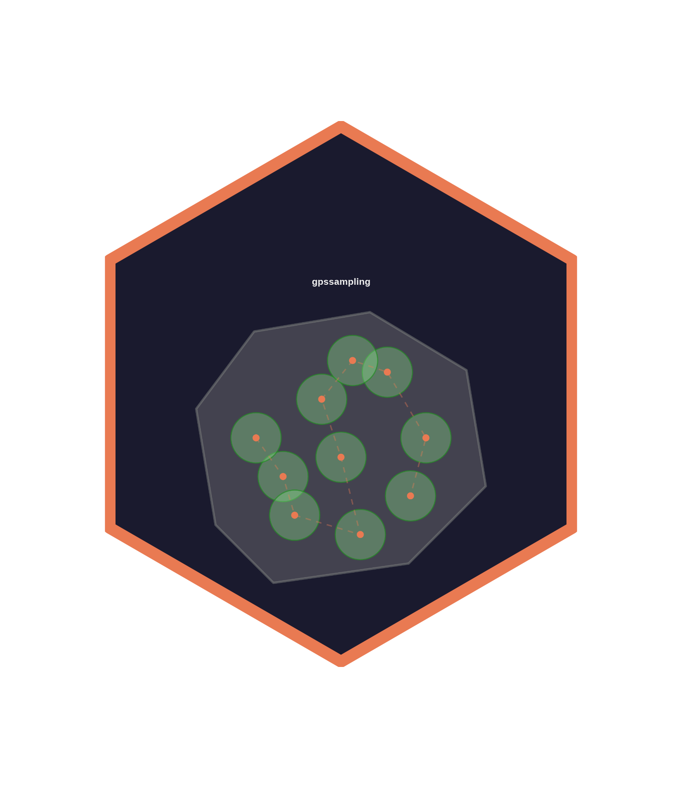

Plot the distribution of buildings per buffer
Source:R/sampling_map.R
plot_buffer_distribution.RdCreates a ggplot histogram showing how many buildings fall within each buffer zone, faceted by community. Useful for assessing sampling density uniformity across communities. Vertical dashed lines indicate the median and mean per community.
Usage
plot_buffer_distribution(
export_result,
fill_color = "#5B9BD5",
mean_color = "#D94F4F",
median_color = "#2E8B57",
binwidth = NULL,
title = "Buildings per Buffer",
subtitle = NULL,
free_y = TRUE
)Arguments
- export_result
The manifest returned by
export_points()when called withprint_table = TRUE. Must carry abuffer_detailsattribute (data frame with columnscommunity,buffer_idx,n_buildings,buffer_radius_m).- fill_color
Bar fill color. Default
"#5B9BD5".- mean_color
Color for the mean line. Default
"#D94F4F".- median_color
Color for the median line. Default
"#2E8B57".- binwidth
Histogram bin width. If
NULL(default), ggplot2 picks an automatic value.- title
Plot title. Default
"Buildings per Buffer".- subtitle
Plot subtitle. If
NULL(default), auto-generated from community count and total buffer count.- free_y
Logical. If
TRUE(default), facet y-axes are free (communities with different buffer counts get their own scale).
Examples
if (FALSE) { # \dontrun{
manifest <- export_points(batched, "output", print_table = TRUE)
plot_buffer_distribution(manifest)
} # }